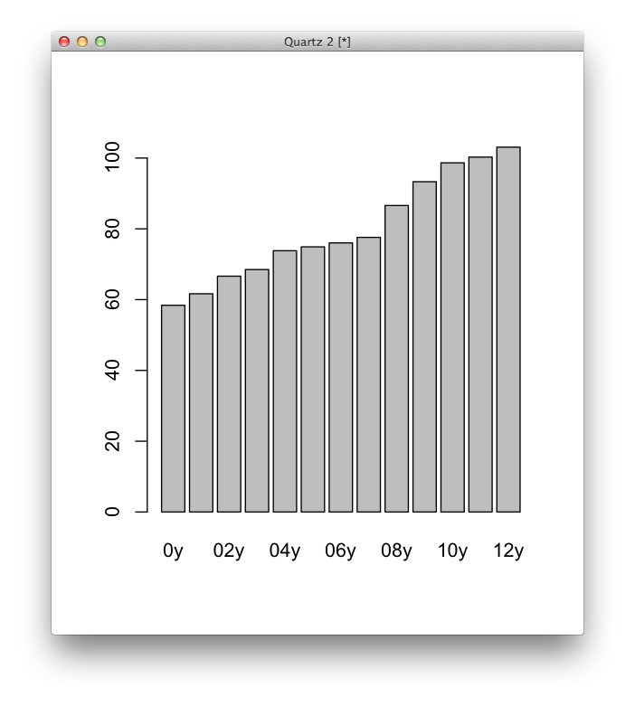
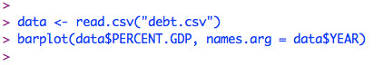
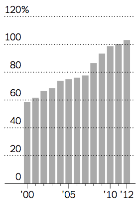
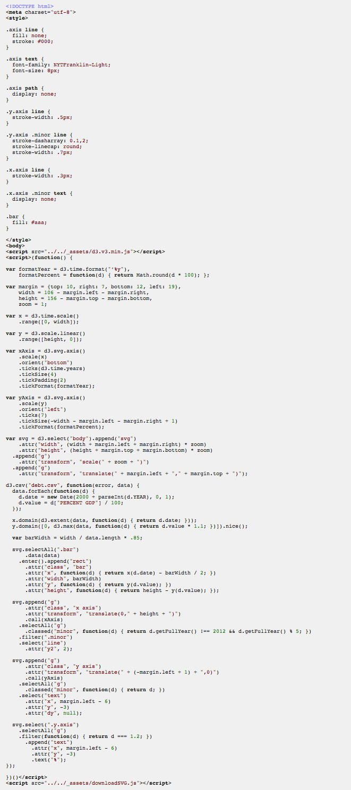

The spectrum of data graphics and getting started with chart forms
The spectrum
“It always amazes me how little code you need to capture the essence of data graphics, and how much code you need for all the fiddly details like scales and axes and legends.” - Hadley Wickham, creator of ggplot2 and many other R packages
Would you rather make this chart...
In R
 In D3
 Two of the most important places for journalistically important data visualization, FiveThirtyEight and WonkBlog, have terribly-designed (but quickly produced) charts.
A handy tool from the Godfather about when to do which, and what it means for this class.
Charts and forms: and overview
The most important choice in communicating your idea with a chart is your form. It just depends what you want to say. What questions do you want your visualization to answer? Why is it important? Here's one graphic that shows different perspectives on the same data set.
This amazing data blog has static, semi ugly charts, and it still communicates its ideas well.
A small survey of forms, and which we'll focus on in this class.
Let's talk about bar charts.